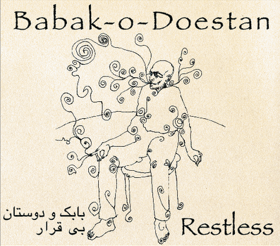

Babak-O-Doestan - Restless
Geplaatst door: Jodi Lukoki op December 2, 2014
Genre: World
Babak-o-doestan (Babak en vrienden) speelt zelf geschreven werk met invloeden uit jazz, fado, balkan, Turkse en Iraanse muziek. Teksten zijn van oude en moderne Iraanse dichters of zanger/gitarist Babak Amiri zelf. Acht jaar geleden ontmoeten Babak en percussionist Minze Koopman elkaar in een Amsterdams café. Na een aantal keer gespeeld te hebben ontmoeten ze pianist Bam Comijs, en werden ze gevraagd mee te werken aan een album met akoestische muziek van diverse Amsterdamse bands. De reacties van het publiek, op Babak-o-doestan, bij de presentatie van het album waren overweldigend. Na verschillende muzikanten wisselingen is vier jaar geleden de huidige bezetting van Babak-o-doestan ontstaan. Na veel grote en kleine optredens heeft de groep het album “Restless” opgenomen.
De reacties van het publiek, op Babak-o-doestan, bij de presentatie van het album waren overweldigend.
Alle liedjes zijn, als op het podium, tegelijkertijd gespeeld, hier en daar voorzien van extra zang en percussie. Een optreden van Babak-o-doestan is altijd een belevenis, door improvisaties en het hechte samenspel van de groepsleden word het publiek meegenomen langs allerlei muziek stijlen en emoties. Door de diverse achtergrond van de groepsleden is er een uniek geluid ontstaan. Babak-o-doestan wordt vaak world music genoemd, de groep noemt het zelf mixed music. Met een trouwe aanhang verspreid over de hele wereld is Babak-o-doestan nu klaar om met het album “Restless” zich aan een groter publiek te presenteren. Babak Amiri: gitaar en zang; Bam Commijs: piano; Heather Leslie: cello; Murat Yatmaz: bas; Minze Koopman: cajon.
Tracklist:
- I call your name
- Tehran
- Color of darkness
- Wine
- Tell me your name
- Anatolia
- With eyes
- Poetry is freedom
- Behind the mountains
- Restless I
- Restless II